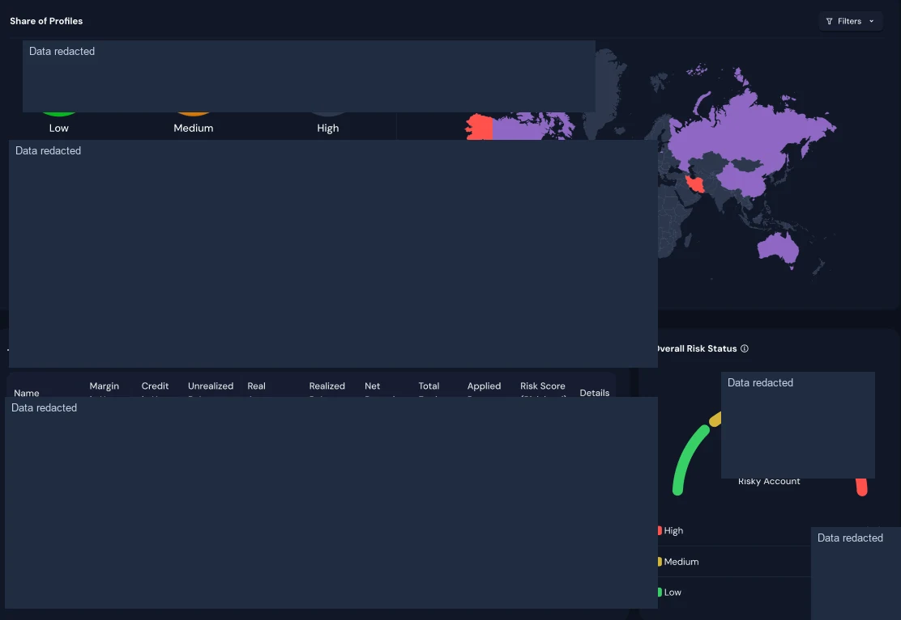
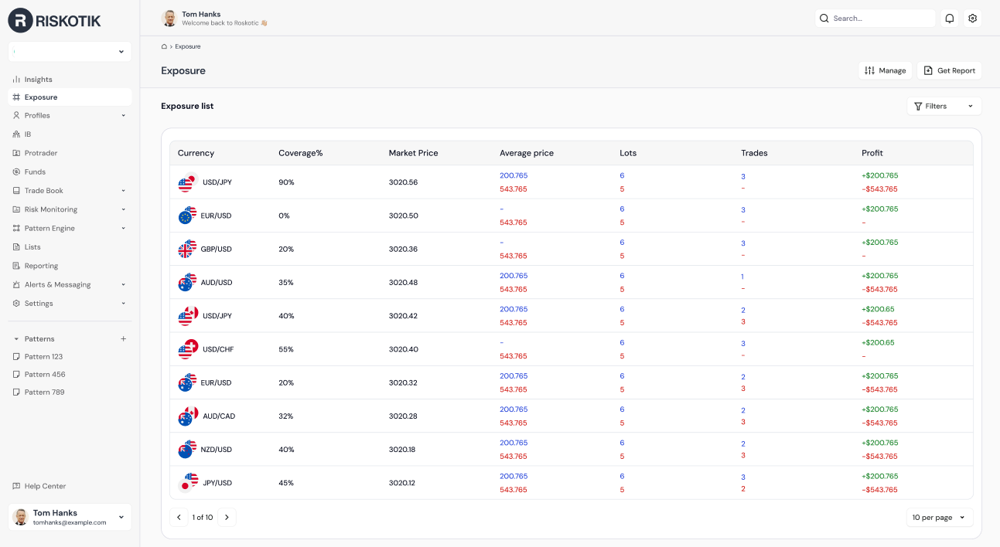
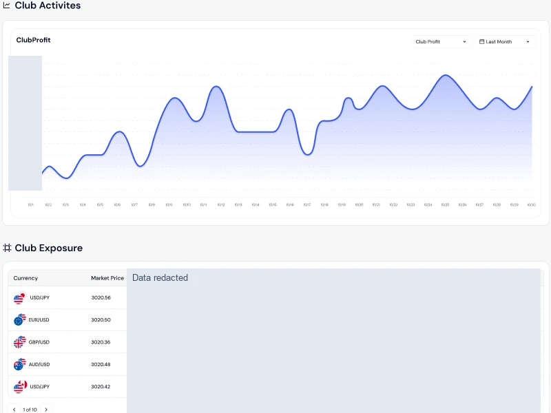

FinTech / Product Work
Riskotik — Brokerage Risk Management Platform
End-to-end product ownership of a brokerage platform for exposure analysis, behavior monitoring and operational risk decisions.

Riskotik broker overview: exposure, live orders and operational risk indicators.
Product Overview
Riskotik is a brokerage risk management platform that brings trading exposure, client behavior and operational risk into a shared analytics and monitoring environment.
Business Problem
Brokerage risk decisions depend on understanding exposure and trading behavior across accounts, currencies and markets. Riskotik addresses the need to connect these signals with monitoring, reporting and operational decision support.
Target Users
Brokerage risk analysts, trading and dealing teams, operations staff and business stakeholders reviewing exposure and customer activity.
My Role & Ownership
I initiated the product concept and owned its full development journey at Top Fast Technology: ideation, problem definition, requirements engineering, product design collaboration, prioritization, development coordination and delivery. This is a distinct implementation from the earlier risk-management product I worked on at DeltaFX.
Product Discovery & Strategy
I translated brokerage risk-management needs into product requirements, a roadmap and a prioritized backlog. Working with business stakeholders, designers and engineers, I connected analytical needs to practical review and monitoring workflows.
Key Product Decisions & Capabilities
Broker-level dashboards provide a starting point for examining live orders, currency and geographic exposure, customer behavior and trading patterns. Operational reports and risk indicators support deeper investigation and help teams move from a high-level signal to the relevant detail.
Delivery & Cross-functional Collaboration
As Product Owner, I coordinated business stakeholders, product designers and engineering teams through workflow design, implementation and delivery. I continued to prioritize improvements as the product developed, keeping analytics and operational use aligned.
Outcomes & Product Value
Riskotik translates complex brokerage risk requirements into a platform for exposure visibility, behavioral analysis and operational monitoring. Its value is a connected view that supports investigation and informed risk decisions.
Product Screens
Explore the interfaces and workflows below.
View full image ↗

View full image ↗

View full image ↗

View full image ↗